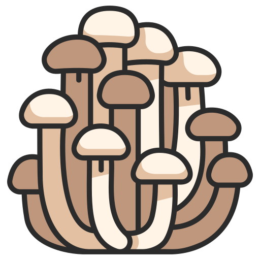

-  MycoBite
- Menu
- Contact
Welcome to MycoBite – where the magic of mushrooms meets the artistry of vegan cuisine. At MycoBite, we've cultivated a haven for food enthusiasts seeking a unique and wholesome dining experience. Nestled in the heart of our kitchen is the incredible world of mushrooms, celebrated for their rich flavors, diverse textures, and countless health benefits.
About us
Our journey began with a passion for sustainable, plant-based living, and a profound appreciation for the versatility of mushrooms. From the earthy umami of shiitake to the delicate nuances of enoki, each dish at MycoBite is a testament to our commitment to crafting delicious, cruelty-free meals that nourish both body and soul. Why mushrooms, you ask? These remarkable fungi not only captivate the senses but also boast an array of nutritional wonders. Packed with essential nutrients, mushrooms are a powerhouse of antioxidants, vitamins, and minerals. They're nature's gift to gastronomy, and we've made it our mission to share their delightful secrets with you. Step into our world, where our chefs artfully blend traditional and modern culinary techniques to showcase the incredible range of flavors that mushrooms offer. From mouthwatering appetizers to hearty mains and decadent desserts, every bite tells a story of sustainability, compassion, and the sheer joy of indulging in exquisite plant-based creations.